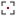

Encuadre Arquitectónico
Marco de encuadre en las cuatro esquinas con un punto focal central en color de acento. Simboliza la lente, la composición de la vista arquitectónica, el enfoque milimétrico y la selección precisa del encuadre fotográfico.


E Estructural
Letra 'E' sintetizada en forjados arquitectónicos horizontales con voladizos de longitud decreciente sobre un pilar maestro vertical. Evoca la estructura, el cálculo arquitectónico, las losas de hormigón y el ritmo constructivo.
Horizonte Óptico
Círculo de geometría pura cortado con precisión por una línea de horizonte horizontal. Representa el objetivo de la cámara, el sol naciente, la perspectiva cónica y la línea de cota fundamental de toda obra construida.